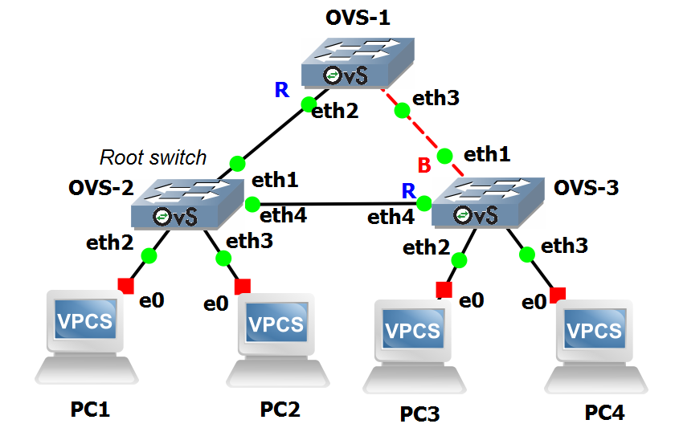
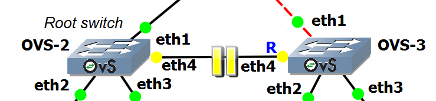

Lab #15
Open vSwitch: Spanning Tree Protocol (STP)
The purpose of this lab is to show how STP (Spanning Tree Protocol) works in a simple network scenario.
Introduction
The Spanning Tree Protocol (STP) is a network protocol that builds a loop-free logical topology for Ethernet networks.
The basic function of STP is to prevent bridge loops and the resulting broadcast storm effect by selectively disabling links while keeping full connectivity among nodes.
STP allows a network design to include backup links providing fault tolerance if an active link fails.
In this lab we will create a simple network made of three swithes onnected in a triangle topology.
STP disables one of the ports of the three switches to block infinite recirculation of packets and prevent broadcast storms.
Preparation steps
This lab requires the GNS3 VM to instantiate Docker containers of Linux-based routers.
In particular, it requires that you have already executed once the preparation steps described for Lab #13.
Experiment steps
- Recreate the following topology in GNS3. Choose the "GNS3 VM" server to instantiate all the devices of this lab.
Ignore the fact that one link appears as a dashed red line (this was achieved by editing the style of the line representing the link).

- Start the OVS-1 switch and right-click on its icon to open an Auxiliary Console terminal.
- At the root command prompt, use
vi /etc/openvswitch/start.sh to create the following script.
#!/bin/sh
ovs-vsctl set Bridge br0 stp_enable=true
sysctl -w net.ipv6.conf.all.disable_ipv6=1
sysctl -w net.ipv6.conf.default.disable_ipv6=1
- Then make the script executable with
chmod 755 /etc/openvswitch/start.sh
- Execute the script with
/etc/openvswitch/start.sh. This will enable STP and disable IPv6 in the switch.
- Do the same for switches OVS-2 and OVS-3.
- Execute the command
ovs-appctl stp/show in all of the three switches to check STP status.
- Start PC1 and execute the following commands in its terminal:
ip 192.168.10.2/24
save
- Do the same for PC2, PC3 and PC4, by assigning to them the IP addresses 192.168.10.3, 192.168.10.4 and 192.168.10.5, respectively.
- Start capture on link connecting OVS1 to OVS2.
- Start capture on link connecting OVS1 to OVS3.
- Start capture on link connecting OVS2 to OVS3.
- In PC1 terminal execute the commands:
ping 192.168.10.3
ping 192.168.10.4
ping 192.168.10.5
and verify that answers are received.
Experiment results
We first understand how STP worked in this topology, then we will analyze packet captures on the three links connecting the switches.
STP status of OVS switches
In the auxiliary terminal of switches OVS-1, OVS-2 and OVS-3 execute the command:
ovs-appctl stp/show
and inspect that resulting output.
NOTE: Be aware that different results might be obtained in another experiment setup, due to the random MAC addresses assigned to the switches.
In our case, we obtained that:
- Of the three switches, the root switch is OVS-2 (with a Root Bridge ID equal to d6:7b:51:7f:f5:41).
- For switch OVS-1, port
eth2 is the root port (i.e. the port connecting the switch to the shortest path towards the root switch; all the ports are in forwarding state.
- For switch OVS-2, that is root switch, all the ports are in forwarding state.
- For switch OVS-3, port
eth4 is the root port; port eth1 is in blocked state, all the other ports are in forwarding state.
Analysis of packet traces
By analysing the packet traces captured with Wireshark on the three links connecting the switches, we notice that:
- The first ping, from PC1 towards PC2, generated a broadcast ARP request (Who has 192.168.10.3? Tell 192.168.10.2).
This packet is forwarded by OVS-2 to OVS-1 and OVS-3.
The same packet is also forwarded by OVS-1 on the link connecting it to OVS-3.
Switch OVS-3, having port eth1 in blocked state, does not receive the broadcast packet forwarded by OVS-1 and does not forward the packet received from OVS-2 upwards to OVS-1.
This prevents broadcast packets to circulate in the loop formed by the three switches.
- Since PC2 is also connected to the OVS-2 switch, the corresponding ARP reply generated by PC2 (192.168.10.3 is at 00:50:79:66:68:01), which is unicast transmitted to the sender of the ARP request, is not captured on the links connecting OVS-2 with OVS-1 and OVS-3.
- Likewise, subsequent ICMP echo request and ICMP echo reply exchanged by PC1 and PC2, being transmitted as unicast packets, are not captured on the links connecting OVS-2 with OVS-1 and OVS-3.
- The second ping, from PC1 towards PC3, generated a broadcast ARP request (Who has 192.168.10.4? Tell 192.168.10.2).
This packet is forwarded by OVS-2 to OVS-1 and OVS-3.
The same packet is also forwarded by OVS-1 on the link connecting it to OVS-3.
Switch OVS-3, having port eth1 in blocked state, does not receive the broadcast packet forwarded by OVS-1 and does not forward the packet received from OVS-2 upwards to OVS-1.
- Since PC3 is connected to the OVS-3 switch, the corresponding ARP reply generated by PC3 (192.168.10.4 is at 00:50:79:66:68:02), which is unicast transmitted to the sender of the ARP request, appears on the link connecting OVS-2 and OVS-3.
- Likewise, subsequent ICMP echo request and ICMP echo reply exchanged by PC1 and PC3, being transmitted as unicast packets, appear on the link connecting OVS-2 and OVS-3.
- The third ping, from PC1 towards PC4, generated a broadcast ARP request (Who has 192.168.10.5? Tell 192.168.10.2).
For this packet, the corresponding ARP reply generated by PC4, and the subsequent ICMP echo request and ICMP echo reply exchanged by PC1 and PC4, hold the same considerations made above for the second ping.
STP reconfiguration after link failure
To prove that STP allows switches to react to link failures and topology changes, we will disable the link connecting the switch OVS-2 and OVS-3.

This link, in the previuos network state, was actively used to carry packets exchanged by hosts on the left (PC1 and PC2) and hosts on the right (PC3 and PC4).
We will verify that, after disabling the horizontal link, switch OVS-3 brings its port eth1 from blocked state to forwarding state.
In this way, packets exchanged by PC1 and PC3 will follow the route passing for OVS-1.
- In PC1 terminal execute the command:
ping 192.168.10.4 -c 120
to start an exhange of ICMP packets between PC1 and PC3.
- At some point, disable the link connecting OVS-2 and OVS-3 (right-click on the link and select "Disable").
- Verify that
ping shows ICMP timeouts for several seconds, then ICMP replies appear again.
84 bytes from 192.168.10.4 icmp_seq=13 ttl=64 time=7.993 ms
84 bytes from 192.168.10.4 icmp_seq=14 ttl=64 time=9.850 ms
192.168.10.4 icmp_seq=15 timeout
192.168.10.4 icmp_seq=16 timeout
....
192.168.10.4 icmp_seq=38 timeout
84 bytes from 192.168.10.4 icmp_seq=39 ttl=64 time=18.276 ms
84 bytes from 192.168.10.4 icmp_seq=40 ttl=64 time=10.211 ms
This shows that the network was able to reconfigure to restore connectivity.
In the auxiliary terminal of OVS-3 execute the command:
ovs-appctl stp/show
and verify that port eth1, which before was in blocked state, is now in forwarding state.
Return to list of labs
Copyright (c) 2024 - Roberto Canonico
Last updated: October 3, 2024 by Roberto Canonico